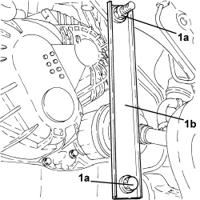

4410D16 BRACKET (ONE) RETAINING CHASSIS TO BODY - R R
- Path
- Procedures > 44 SUSPENSION AND WHEELS > 4410 FRONT SUSPENSION > 4410D FRAME AND CROSSMEMBER > 4410D16 BRACKET (ONE) RETAINING CHASSIS TO BODY - R R
- Kind
- repair procedure (removal / refitting; the operation number is the code)
- Applies to
- all engines; all production periods
- Interactive page
- https://sloeber94.github.io/elrnDB-aBrrSpdr/en/#/946002206
Applies to: all engines; all production periods
 Removing
Removing
 Refitting
Refitting- Position the vehicle on a lift.
1. Undo the fastenings (1a) and remove the bracket (1b) from the front suspension frame and from the bodyshell.

Applies to: all engines; all production periods
Refitting
Removing- Fit the bracket in its seat and tighten the fastenings to the recommended torque.
Component | Fastening | dia | Value (daNm) | Validity |
|---|---|---|---|---|
Front suspension frame reinforcement bracket | Bolt | M12 | 7.2 ÷ 8.8 |
Component | Fastening | dia | Value (daNm) | Validity |
|---|---|---|---|---|
Front suspension frame reinforcement bracket | Nut | M12 | 7.2 ÷ 8.8 |
- Remove the vehicle from the lift.